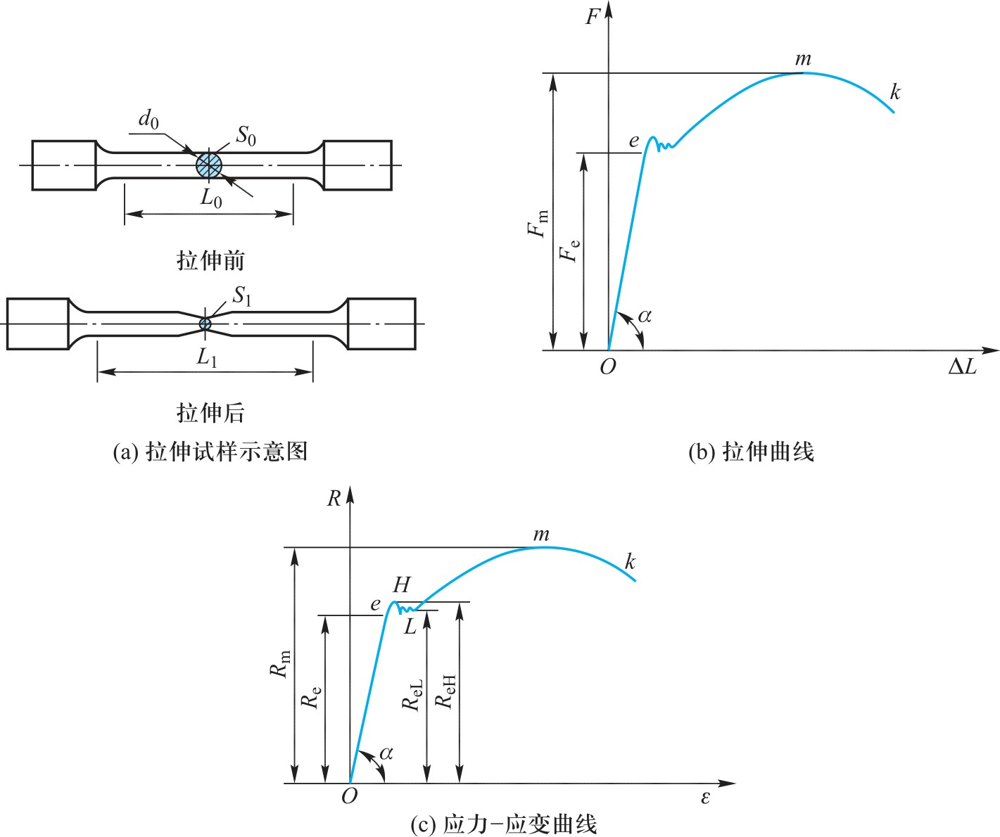

工程材料与机械制造基础（第3版）
Types of Engineering Materials
01
材料与信息、能源并列为现代化技术的三大支柱，而能源和信息的发展又依托于材料。
工程材料主要指用于机械工程和建筑工程等领域的材料。按组成可分为金属材料、高分子材料、无机非金属材料和复合材料四大类。
01

01
金属材料包括钢铁合金和非铁金属（有色金属）。
具有良好的力学性能、物理性能、化学性能及工艺性能。能采用比较简便和经济的工艺方法制成零件。
是目前应用最广泛的材料。
01
高分子材料：包括塑料、橡胶等。原料丰富、成本低、加工方便。在国民经济与日常生活的众多领域得到广泛应用。
无机非金属材料：主要是陶瓷材料、水泥、玻璃和耐火材料。具有不可燃烧性、高耐热性、高化学稳定性、耐老化性、高硬度和良好的耐压性。
01
复合材料：由基体材料（树脂、金属、陶瓷）和增强剂（颗粒、纤维、晶须）复合而成。兼具组分材料的特性，又具有复合后的新特性。力学性能和功能可根据使用需要进行设计制造。
其他新材料：超导材料、贮氢材料、形状记忆合金、非晶态材料、磁性材料、压电材料等。具有某种特殊物理性能、化学性能、生物性能以及功能之间相互转化的能力。
Properties of Engineering Materials
02
工程材料的性能分为使用性能和工艺性能。
使用性能：在服役条件下能保证安全可靠工作所必备的性能，包括力学性能（机械性能）、物理性能和化学性能等。决定了材料的使用范围和寿命。
工艺性能：材料的可加工性，包括锻造性能、铸造性能、焊接性能、热处理及切削加工性能等。在设计零件和选择工艺方法时都要考虑。
对绝大多数工程材料而言，力学性能是最重要的使用性能。
Strength under Static Loading
03
强度：在外力作用下材料抵抗变形和断裂的能力。工程上以抗拉强度和屈服强度最为常用。
强度指标常通过拉伸试验测定。将拉力\(F\)除以试样原始横截面积\(S_0\)得拉应力\(R\)（MPa）；将伸长量\(\Delta L\)除以原始标距\(L_0\)得应变\(\varepsilon\)。
根据\(R\)和\(\varepsilon\)画出应力-应变曲线（\(R-\varepsilon\)曲线），可从中直接读出材料的常规力学性能指标。
03
\(R-\varepsilon\)曲线开始段（\(e\)点以前）为直线，该段产生的变形可以恢复，称为弹性变形。
材料在弹性变形范围内应力与应变的比值称为弹性模量：\[E = \frac{R}{\varepsilon}\]
弹性模量\(E\)表征材料产生弹性变形的难易程度，工程上称为材料的刚度。刚度不足会因发生过大的弹性变形而失效。
\(E\)主要取决于材料内部原子间的作用力（晶格类型、原子间距），各种强化手段对\(E\)的影响较小。
03
当应力值超过\(e\)点，试样产生塑性变形。应力增至\(H\)点时出现水平波折线——即使外力不增加，试样仍继续塑性伸长，此现象称为屈服。
发生屈服所对应的应力值即屈服强度，用\(R_{\mathrm{e}}\)表示（MPa）。包括下屈服强度\(R_{\mathrm{eL}}\)和上屈服强度\(R_{\mathrm{eH}}\)。
对于没有明显屈服点的材料，规定产生\(0.2\%\)塑性变形时的应力值为该材料的屈服强度，称为名义（条件）屈服强度\(R_{\mathrm{r0.2}}\)。
工程中大多数零件在弹性范围内工作，产生过量塑性变形即失效，所以屈服强度是零件设计和选材的主要依据之一。
03
抗拉强度是试样拉断前所能承受的最大应力值，即试样所能承受的最大载荷除以原始横截面积：
\[R_{\mathrm{m}} = \frac{F_{\mathrm{m}}}{S_0}\]
\(F_{\mathrm{m}}\)——试样所能承受的最大载荷（N），\(S_0\)——试样原始横截面积（\(\mathrm{mm}^2\)）。
抗拉强度表征材料抵抗断裂的能力，是设计和选材的主要依据之一。对于低塑性或脆性材料，抗拉强度更应作为主要设计指标。
Plasticity
04
材料断裂前产生塑性变形的能力称为塑性。以材料断裂时的最大相对塑性变形量来表征。
拉伸时用断后伸长率\(A\)和断面收缩率\(Z\)表示，两者均为量纲为一的量。
04
断后伸长率表示试样断裂时的相对伸长量：
\[A = \frac{L_u - L_0}{L_0} \times 100\%\]
\(L_0\)——试样原始标距（mm），\(L_u\)——试样断后标距（mm）。
04
断面收缩率表示试样断裂后截面的相对收缩量：
\[Z = \frac{S_0 - S_u}{S_0} \times 100\%\]
\(S_0\)——试样原始横截面积（\(\mathrm{mm}^2\)），\(S_u\)——试样断裂处的最小横截面积（\(\mathrm{mm}^2\)）。
\(A\)、\(Z\)愈大，材料的塑性愈好。
Hardness
05
材料抵抗硬物压入其表面的能力称为硬度，也可看作材料抵抗局部塑性变形的能力。硬度愈高，抵抗局部塑性变形的能力愈大。
在材料半成品和成品的质量检验中，硬度是标志产品质量的重要依据。
常用的硬度有布氏硬度（HBW）、洛氏硬度（HRA/HRB/HRC）和维氏硬度（HV）等。
05
用一定载荷\(F\)将直径为\(D\)的碳化钨合金球压入试样表面，保持一定时间后卸除载荷。在读数显微镜下测量压痕直径\(d\)并查表得硬度值。
材料越软→压痕直径越大→布氏硬度值越低；反之越高。
优点：压痕面积大，不受微小不均匀硬度影响，试验数据稳定，重复性好。
缺点：不适用于成品零件和薄壁件的硬度检验。
05
将标准压头（\(120°\)金刚石圆锥或一定直径碳化钨合金球）压入试样表面，保持一定时间后卸除载荷，根据残余压痕深度确定硬度，可直接由硬度计刻度盘读出。
国家标准规定有十五种标尺，其中HRA、HRB、HRC最为常用，尤以HRC应用最多。
优点：操作迅速简便，压痕面积小，适用于成品检验。
缺点：接触面积小，硬度不均匀时数值波动较大，需多测几个点取平均值。
05
将正四棱锥体的金刚石压头压入试样表面，测量压痕对角线长度，根据所加压力和对角线平均长度查表得硬度值。
优点：压痕深度浅，测量精确，硬度测量范围大，尤其能很好地测量薄试样的硬度。
载荷较小的维氏硬度又称为显微硬度（HM），可表示金相组织中不同相的硬度。
缺点：需要在显微镜下测量压痕尺寸，工作效率较低。
Other Mechanical Properties
06
材料抵抗冲击载荷的能力称为冲击韧性。
常用一次摆锤冲击试验测定：摆锤冲断试样所做的冲击吸收功\(A_K\)与试样缺口处横截面积\(S\)的比值，即冲击韧度：
\[a_K = \frac{A_K}{S}\]
现实中机械零件很少受大能量一次冲击破坏，往往是经受小能量多次冲击，因冲击损伤积累引起裂纹扩展而断裂。
06
材料抵抗裂纹（失稳）扩展的能力称为断裂韧性，用断裂韧度\(K_{Ic}\)表示（\(\mathrm{MPa \cdot m^{1/38}}\)）。
实际材料中常存在一定缺陷（夹杂物、气孔、微裂纹等），这些缺陷都可看作裂纹。
在外力作用下，这些裂纹扩展的难易程度用断裂韧性表示。断裂韧性与材料本身的成分、组织和结构有关。
06
许多机器零件（轴、齿轮、弹簧、活塞杆等）在交变载荷下工作，所受应力一般低于屈服强度。经较长时间工作后发生断裂的现象称为疲劳。
疲劳断裂往往无先兆，突然断裂，因此危害很大。
疲劳强度：通过测定材料在交变载荷作用下而无断裂的最大应力得到，用\(R_{\mathrm{r}}\)表示（MPa）。
钢的交变次数为\(10^6\sim10^7\)，非金属为\(10^7\sim10^8\)。
06
机器运转时，任何零件在接触状态下相对运动都会产生摩擦，导致磨损，并最终失效。按磨损破坏机理分为三类：
黏着磨损（咬合磨损）：接触面在压力下局部黏着（冷焊），相对运动时黏着处分离，小颗粒被拉拽出来。反复黏着和分离造成。
磨粒磨损：摩擦副一方硬度远大于另一方，或接触面间存在硬质粒子。特征：接触面上有明显切削痕迹。
腐蚀磨损：外界环境引起金属表面腐蚀产物剥落，与机械磨损（磨粒、黏着）相结合而出现的磨损。
High/Low Temp & Chemical Properties
07
材料在长时间恒温、恒应力作用下，发生缓慢塑性变形的现象称为蠕变。温度越高、工作应力越大→蠕变发展越快→断裂前工作时间越短。
蠕变的另一种表现形式是应力松弛：承受弹性变形的零件，总变形量保持不变，但随时间的延长，工作应力自行逐渐衰减。如高温紧固件因应力松弛使紧固失效。
07
随温度下降，多数材料会出现脆性增加的现象，严重时甚至发生脆断。
通过冲击吸收功\(A_K\)与温度的变化关系来确定材料的韧、脆状态转化。温度降至某一值时，\(A_K\)值急剧减小，使材料呈脆性状态。
材料由韧性状态转变为脆性状态的温度\(T_K\)称为冷脆转化温度。材料的\(T_K\)低，表明其低温韧性好。
07
化学性能是指材料在室温或高温时抵抗各种介质化学侵蚀的能力。因化学侵蚀而损坏的现象称为腐蚀。
金属腐蚀主要有化学腐蚀和电化学腐蚀，绝大多数由电化学腐蚀引起。非金属材料的耐腐蚀性远高于金属材料。
07
提高耐腐蚀能力三原则：① 尽量保持均匀单相组织（无电极电位差）；② 减小两极间电极电位差，提高阴极电极电位；③ 尽量不接触电解质溶液，减小甚至隔断腐蚀电流。
常用防腐蚀方法：① 改变金属化学成分（不锈钢、表面渗铬/渗铝等）；② 覆盖法隔离金属与腐蚀介质（镀层、覆层、发蓝等）；③ 改善腐蚀环境（干燥气体封存、密封包装等）；④ 阴极保护法（牺牲阳极或外加电流法保护阴极金属）。
总结
弹性模量：\(E = R/\varepsilon\)，表征刚度。取决于原子间作用力。
屈服强度 \(R_{\mathrm{e}}\)：发生屈服时的应力。无明显屈服点用\(R_{\mathrm{r0.2}}\)。设计和选材主要依据。
抗拉强度 \(R_{\mathrm{m}}\)：\(R_{\mathrm{m}} = F_{\mathrm{m}}/S_0\)。表征抵抗断裂能力。
塑性：\(A = (L_u-L_0)/L_0 \times 100\%\)，\(Z = (S_0-S_u)/S_0 \times 100\%\)。
硬度：布氏(HBW)、洛氏(HRC最常用)、维氏(HV)。标志产品质量的重要依据。
总结
冲击韧性：\(a_K = A_K/S\)。抵抗冲击载荷的能力。
断裂韧性 \(K_{Ic}\)：抵抗裂纹失稳扩展的能力。与材料成分、组织和结构有关。
疲劳强度 \(R_{\mathrm{r}}\)：交变载荷下无断裂的最大应力。疲劳突然断裂危害大。
蠕变：恒温恒应力下缓慢塑性变形。应力松弛：总变形不变，应力逐渐衰减。
冷脆转化温度 \(T_K\)：韧性→脆性转变温度。\(T_K\)越低，低温韧性越好。
总结
① 工程材料四大类：金属材料、高分子材料、无机非金属材料、复合材料。金属材料应用最广。
② 力学性能：使用性能中最重要。核心指标——强度（\(R_{\mathrm{e}}\)、\(R_{\mathrm{m}}\)）、塑性（\(A\)、\(Z\)）、硬度（HBW/HRC/HV）。
③ 静载拉伸：\(R-\varepsilon\)曲线→弹性变形→屈服→强化→断裂。\(E\)=刚度，\(R_{\mathrm{e}}\)=设计依据，\(R_{\mathrm{m}}\)=抗断裂。
④ 硬度试验：布氏（稳定可靠但不适用成品）、洛氏（快速简便，HRC最常用）、维氏（精确，可测薄件/显微硬度）。
⑤ 其他性能：冲击韧性、断裂韧性、疲劳强度、磨损（黏着/磨粒/腐蚀）、蠕变与应力松弛、冷脆转化。
⑥ 腐蚀防护：均匀单相组织+减小电位差+隔离电解质+阴极保护法。